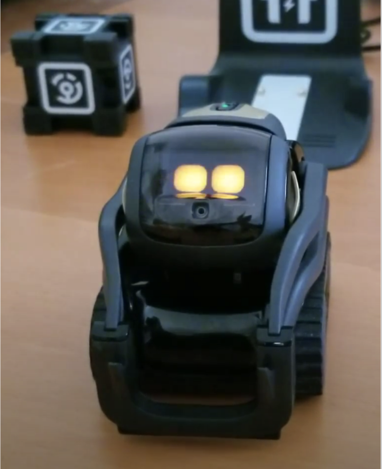
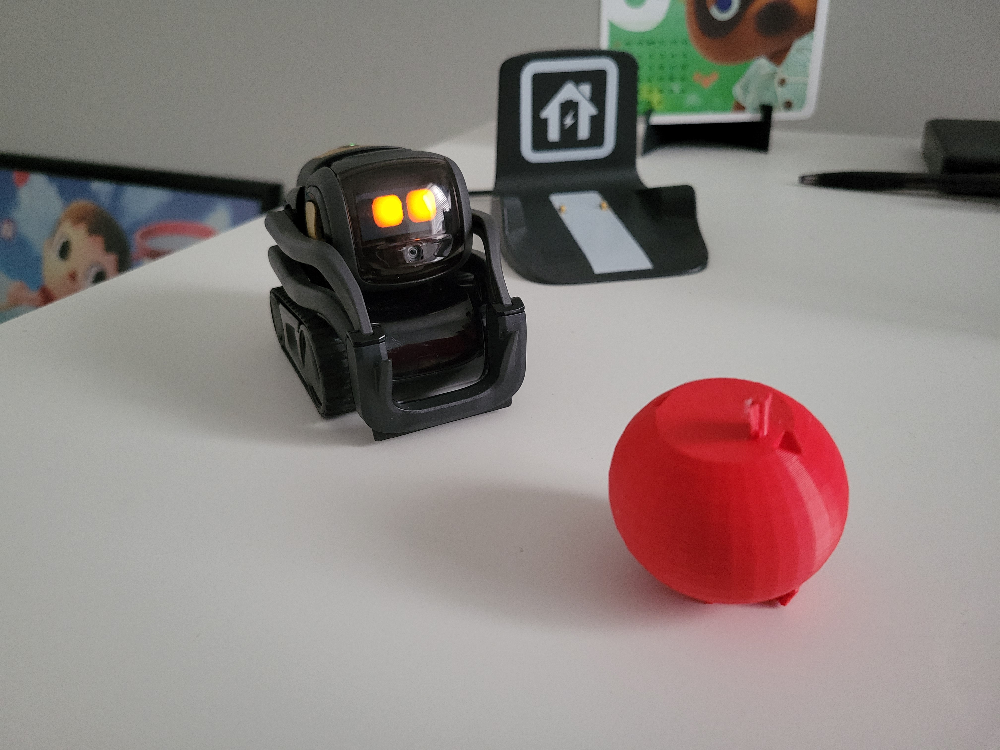
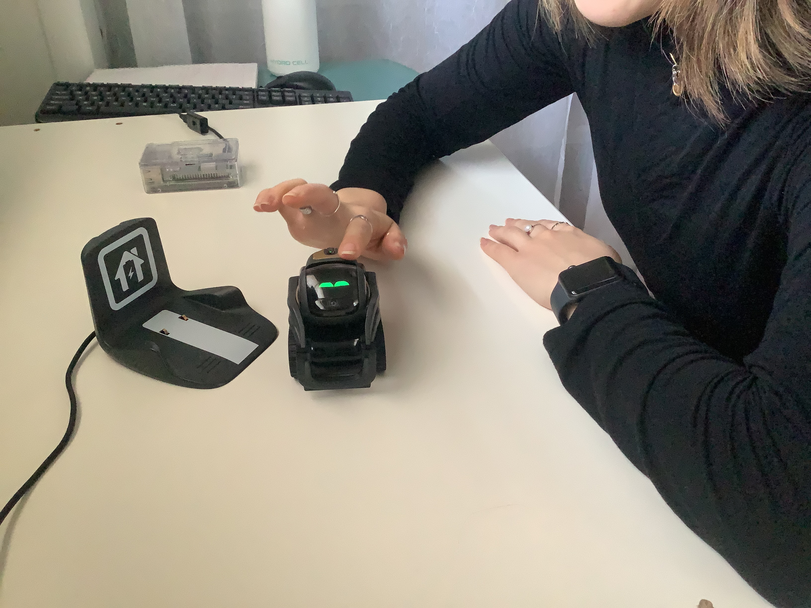

From the Autumn 2021 to Winter 2023 quarter, I assisted on research for the Tamagotchi Robots project in Dr. Sarah Sebo’s Human-Robot Interaction Lab.
Under Dr. Sebo’s direction, the motivation behind our research is to determine whether the long-term care of a social companion robot will improve the interpersonal connection between human and robot and improve the likelihood of interaction. For our purposes, we are using the Anki Vector robot (see the little guy below).
Our main tech stack is Python3 and Robot Operating System (ROS), and we’re also using a Raspberry Pi 3B+ to help manage our custom behaviors for Vector.

(Taken by labmate Spencer Ng)
The Vector robot, named Robbie, can engage in either caretaking or gameplay with the user.
In caretaking, participants will engage in specific caretaking behaviors with Robbie over the course of a week, including feeding Robbie and petting it:
 
In gameplay, the participant will play some sort of verbal game with Robbie, such as 20 Questions or guessing a word from its definition.
Our research was accepted for presentation at the virtual University of Chicago Undergraduate Research Symposium 2022. You can see our poster here.
This research is still ongoing and is now piloting on users in their homes. My contribution was to the infrastructure of the autonomous deployment of Robbie, using an Ubuntu 18.04 setup and custom programs for caretaking behaviors, as well as to the study design, methodology, and field material design.